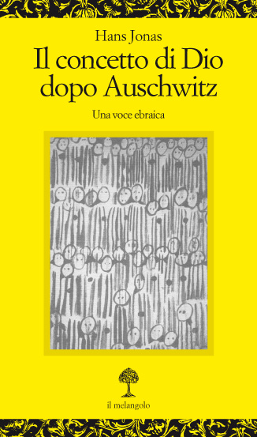
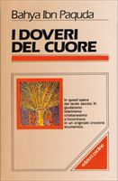

28:35 · 9 OPERE
Primo Levi e la ferita della Shoa
Il filo del discorso
La memoria della Shoah viene interrogata attraverso Primo Levi e il problema di una ferita che continua oltre la liberazione. Il relatore accosta Levi, Jean Améry, Bruno Bettelheim e Paul Celan per riflettere sul peso del ricordo, mantenendo nella scheda distinte le loro esperienze biografiche. Il racconto biblico di Caino e Abele offre una figura del rapporto fra vittima e carnefice, mentre tecnica e modernità sono al centro di una tesi sul carattere organizzato dello sterminio.
Leggi la sintesi completaRiduci la sintesi
La domanda sul male conduce alla teologia, alla privazione del bene e al saggio di Hans Jonas sul concetto di Dio dopo Auschwitz. Il centro della lettura è poi la poesia posta in epigrafe a Se questo è un uomo, identificata come Shemà: il suo invito a considerare e ricordare diventa un obbligo rivolto anche a chi non ha vissuto il Lager. Il discorso passa alla dignità, al comandamento e alla responsabilità, richiamando I doveri del cuore di Bahya ibn Paquda e il tema biblico del nome. Un confronto con l’Innominato di Manzoni introduce il problema del pentimento; seguono racconti e citazioni sui carnefici che richiedono una localizzazione documentale distinta. Socrate, Matteo e Platone accompagnano infine la contrapposizione fra vita esaminata e obbedienza senza giudizio. La conclusione affida alla capacità di rispondere di no una forma di resistenza etica. Le considerazioni teologiche e le analogie culturali restano interpretazioni del relatore.
I libri nel discorso
I sonetti
Note sul riferimento
Copertina: Garzanti · I grandi libri · traduzione Maria Antonietta Marelli · edizione ISBN 9788811363347
Copertina autentica Garzanti, con testo inglese a fronte. Non è la traduzione di Celan e non identifica un esemplare posseduto o tradotto dal poeta durante la persecuzione. Il percorso Garzanti reindirizza alla scheda Il Libraio; conservata quest’ultima come riferimento.
I sonetti di Shakespeare sono espliciti nel riferimento a Celan; l’edizione illustrata non è una sua traduzione.

Bibbia
Note sul riferimento
Copertina: San Paolo, 2014 · Nuova Versione dai Testi Antichi · edizione di riferimento
Genesi 4, Caino e Abele; successivamente Genesi 22, Genesi 2 e Matteo 26,52.

Il concetto di Dio dopo Auschwitz. Una voce ebraica
Note sul riferimento
Copertina: il melangolo · Opuscula 25 · edizione con appendice Il razzismo
Immagine autentica dell’opera, controllata visivamente; l’edizione di riferimento non è attribuita al filmato.
Hans Jonas e il problema del concetto di Dio dopo Auschwitz rendono riconoscibile il saggio già presente in biblioteca.

Se questo è un uomo
Note sul riferimento
Copertina: Einaudi · Saggi 232, 1958 · sovraccoperta Bruno Munari
Riproduzione autentica della sovraccoperta dell’edizione Einaudi 1958, conservata e descritta dal Centro Internazionale di Studi Primo Levi. Non è l’edizione De Silva del 1947 né la versione teatrale. Nessun ISBN moderno attribuito retroattivamente.
Primo Levi e Se questo è un uomo sono espliciti.
Shemà
Note sul riferimento
Copertina di Se questo è un uomo, che contiene Shemà: Poesia del 10 gennaio 1946 · immagine del volume Se questo è un uomo, Einaudi 1958
La poesia è una voce distinta dalla testimonianza autobiografica. È mostrata la sovraccoperta autentica di Se questo è un uomo, Einaudi 1958, che la contiene in epigrafe; non è una copertina autonoma né la copertina di Ad ora incerta.
La poesia letta, posta in epigrafe al libro, è Shemà, 10 gennaio 1946; distinta dal volume in prosa.

I doveri del cuore
Note sul riferimento
Copertina: Edizioni Paoline / San Paolo · Classici del pensiero religioso, 1988
Immagine autentica dell’opera, controllata visivamente; l’edizione di riferimento non è attribuita al filmato.
Titolo I doveri del cuore e autore ibn Paquda sono espliciti.

I promessi sposi
Identificazione probabile
Note sul riferimento
Copertina: BUR · 1998 · introduzione di Guido Bezzola
Immagine autentica dell’opera, controllata visivamente; l’edizione di riferimento non è attribuita al filmato.
Manzoni e la conversione dell’Innominato rimandano probabilmente ai Promessi sposi, titolo non pronunciato.

Apologia di Socrate
Identificazione probabile
Note sul riferimento
Copertina del volume Apologia di Socrate. Critone: BUR · Apologia di Socrate. Critone · a cura di Maria Michela Sassi, 1993
Copertina autentica del volume BUR contenente Apologia di Socrate e Critone. Il secondo titolo non è aggiunto come citazione del video; l’autore del testo è Platone, con Socrate come figura protagonista.
La vita non esaminata rimanda probabilmente ad Apologia 38a, senza annuncio del dialogo.

La Repubblica
Note sul riferimento
Copertina: Laterza · La Repubblica · edizione con testo a fronte di riferimento
Immagine associata all’ISBN di riferimento e controllata visivamente; edizione e traduzione non identificate come quelle citate o lette nel video.
Platone e Repubblica sono espliciti; la capacità intellettiva asservita al male corrisponde al libro VII,519a.